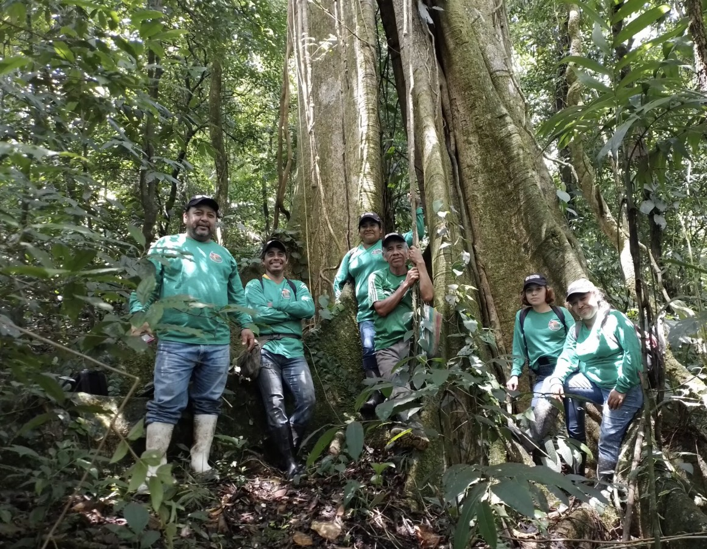
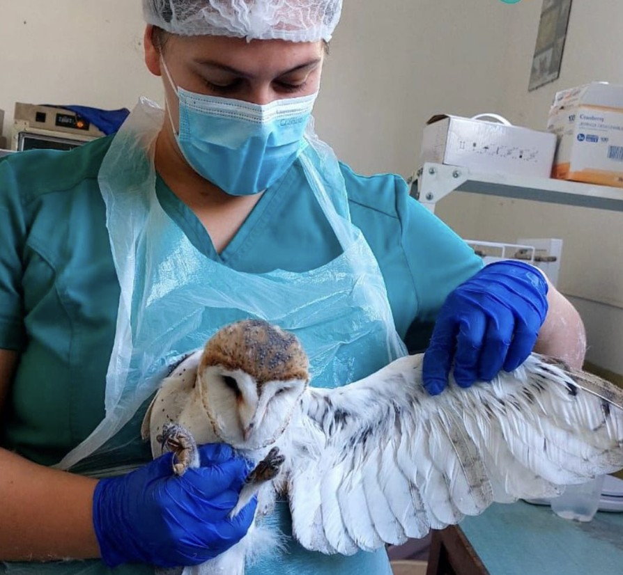
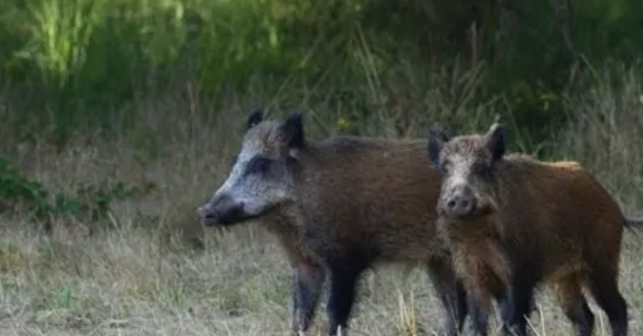

Últimas noticias y orientación

La prevención de la caza ilegal en México requiere una comunicación abierta y asertiva en el entorno ejidal, civil y escolar. Es fundamental identificar los factores de riesgo a tiempo para intervenir de forma óptima mediante brigadas rurales antes de que se consoliden conductas de peligro contra las especies nativas.
Un entorno seguro se construye manteniendo redes de apoyo sólidas y estableciendo límites claros y leyes severas que protejan a los animales en peligro. Fomentar la educación ambiental, el ecoturismo y un estilo de vida sustentable reduce significativamente los niveles de vulnerabilidad social frente al mercado negro.

Para mantener un proceso de recuperación e introducción saludable, se deben seguir pautas esenciales de medicina veterinaria y biológica especializada. El acompañamiento profesional diario ayuda a los ejemplares rescatados del tráfico ilegal a avanzar adecuadamente hacia su reintegración en las Áreas Naturales Protegidas.
Es vital acudir a especialistas certificados y centros autorizados (PIMVS o CIVS) para evitar por completo el cautiverio prolongado y prevenir daños conductuales irreversibles en la fauna. Durante la fase de seguimiento posterior al tratamiento, se deben reforzar los monitoreos con cámaras trampa para estimular su adaptación.

La extracción y caza ilegal de depredadores o dispersores altera severamente el funcionamiento del equilibrio ecológico y las cadenas tróficas. Modifica la regeneración natural de los ecosistemas forestales y selvas, lo que orienta a especies clave hacia la pérdida genética, el aislamiento poblacional y la extinción definitiva.
Cada pérdida en la biodiversidad es una problemática compleja y multifactorial compuesta por detonantes económicos, rezago social y redes delictivas transnacionales. Abordar el problema desde la justicia ambiental y las políticas públicas del país ayuda a eliminar la demanda y permite un acceso directo y equitativo a redes de apoyo comunitario.